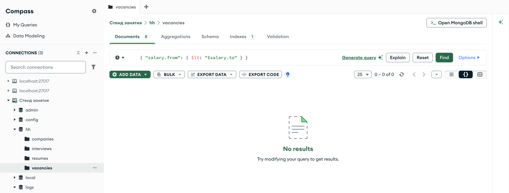
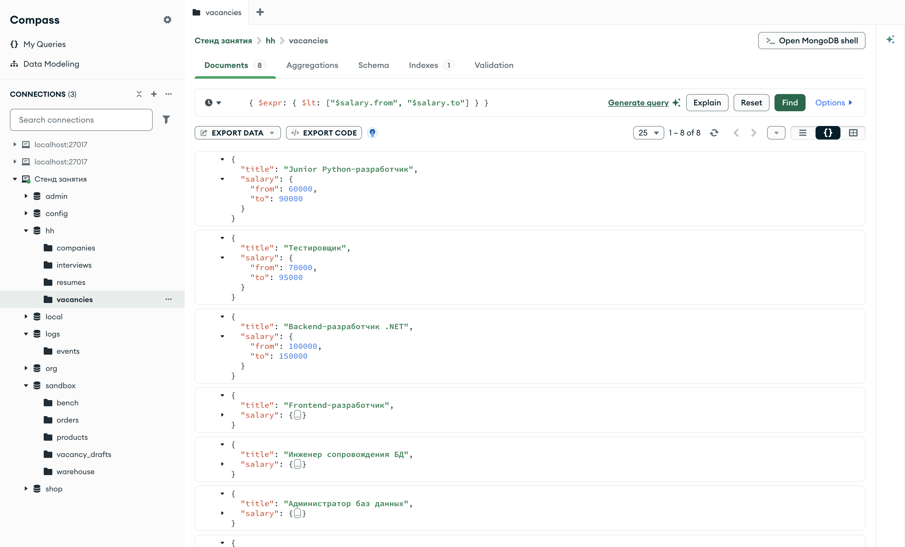
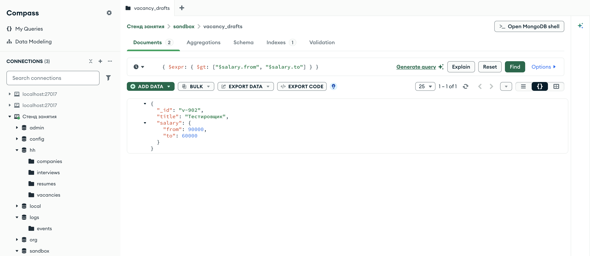
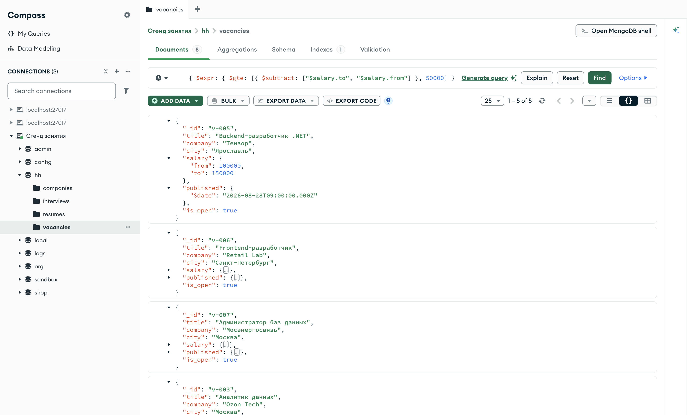
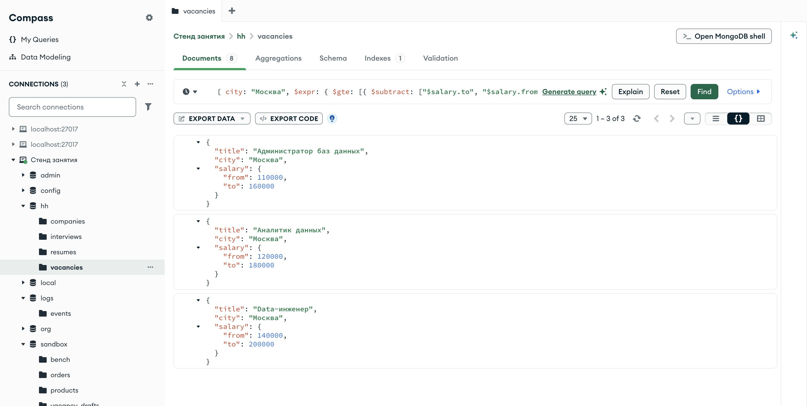
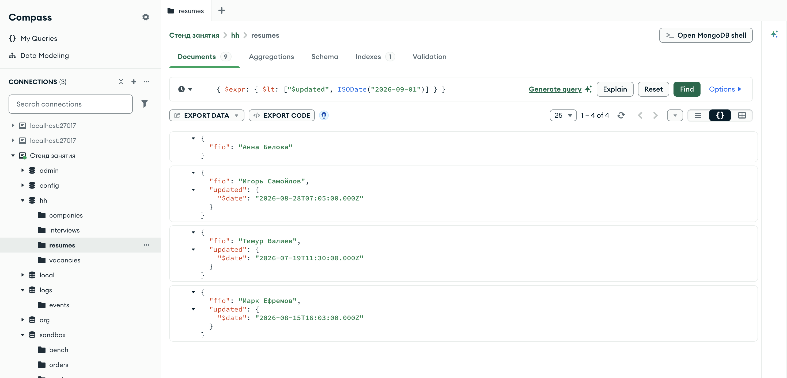

Справочник по MongoDB · модуль 2 · язык фильтров
2.8
Сравнение полей между собой:
$expr
Во всех условиях модуля поле сравнивалось со значением, записанным в фильтре. Здесь разобран оператор $expr, который сравнивает поля одного документа между собой: нижнюю границу вилки с верхней, разность двух полей с числом. Отдельно — чем выражения внутри $expr отличаются от обычных условий фильтра: как в них сравниваются значения разных типов и что происходит с отсутствующим полем.
- Категория
- Язык запросов
- Уровень
- Начальный
- Связанные темы
- Операторы сравнения, наличие поля
$exists, конвейер агрегации в модуле 4 - Зачем это знать
- Проверять согласованность полей внутри документа
Как запускать примеры этой главы
docker compose run --rm reset или скрипт из главы 1.0, §6.mongodb-glava-2.8-python.zip, 60 КБmongodb-glava-2.8-ruby.zip, 60 КБmongodb-glava-2.8-go.zip, 65 КБmongodb-glava-2.8-cpp.zip, 63 КБ — все примеры главы готовыми программами, учебные базы и стенд в Docker. В README.md — запуск в Docker, если Compass нет или он не подключается, и на установленном сервере с Compass, а также что должна напечатать каждая программа.lessons/ch2_8.py — пример вставляется в конец файлаlessons/ch2_8.rb — пример вставляется в конец файлаlessons/ch2_8.go — пример внутрь скобок в конце main, функции и типы — выше mainlessons/ch2_8.cpp — пример внутрь скобок в конце main, функции — выше maincd lessons, затем python ch2_8.pycd lessons, затем python3 ch2_8.py · в Docker: docker compose run --rm python lessons/ch2_8.pycd lessons, затем ruby ch2_8.rb · в Docker: docker compose run --rm ruby lessons/ch2_8.rbcd lessons, затем go run ch2_8.go · в Docker: docker compose run --rm go lessons/ch2_8.gocd lessons, затем g++ -std=c++17 ch2_8.cpp -o prog $(pkg-config --cflags --libs libmongocxx1) && ./prog · в Docker: docker compose run --rm cpp lessons/ch2_8.cpp§1Задача, которую фильтр не решает
У вакансии вилка зарплаты записана двумя полями: salary.from и salary.to. Если при вводе границы перепутали местами, нижняя окажется больше верхней, и вакансия станет попадать в поиски, которым она не соответствует: например, в поиск «от 80 000» по нижней границе 90 000, хотя платить готовы не больше 60 000. Проверить это можно только сравнением двух полей одного документа друг с другом.
Обычным условием это не записать. В условии {"salary.from": {"$lt": ...}} справа от оператора стоит значение — число, строка, дата. Если записать туда "$salary.to", сервер получит строку из десяти символов, и ссылкой на поле она не станет.
print("всего вакансий: ", vacancies.count_documents({})) print("salary.from $lt \"$salary.to\":", vacancies.count_documents({"salary.from": {"$lt": "$salary.to"}}))
std::cout << "всего вакансий: " << vacancies.count_documents(make_document()) << std::endl; std::cout << "salary.from $lt \"$salary.to\": " << vacancies.count_documents(make_document(kvp("salary.from", make_document(kvp("$lt", "$salary.to"))))) << std::endl;
vsego, _ := vacancies.CountDocuments(ctx, bson.D{}) strokoy, _ := vacancies.CountDocuments(ctx, bson.D{{Key: "salary.from", Value: bson.D{{Key: "$lt", Value: "$salary.to"}}}}) fmt.Println("всего вакансий: ", vsego) fmt.Println("salary.from $lt \"$salary.to\":", strokoy)
puts "всего вакансий: " + vacancies.count_documents({}).to_s puts "salary.from $lt \"$salary.to\": " + vacancies.count_documents({ "salary.from" => { "$lt" => "$salary.to" } }).to_s
всего вакансий: 8 salary.from $lt "$salary.to": 0
всего вакансий: 8 salary.from $lt "$salary.to": 0
всего вакансий: 8 salary.from $lt "$salary.to": 0
всего вакансий: 8 salary.from $lt "$salary.to": 0
Вакансий восемь, а условие «нижняя граница меньше "$salary.to"» не нашло ни одной. Числа в salary.from сравнивались со строкой, а число со строкой операторы сравнения не сравнивают (глава 2.2 §4). Ошибки нет, и результат выглядит как «вилок, где нижняя граница меньше верхней, нет», хотя нижняя граница меньше верхней во всех восьми вакансиях.

hh.vacancies, фильтр { "salary.from": { $lt: "$salary.to" } } — строка вместо ссылки на полеCompass выполнил запрос и показал No results при восьми документах в коллекции. "$salary.to" в поле фильтра подсвечен цветом строк, как обычный текст.
§2$expr: выражение вместо условия
Оператор $expr стоит на месте имени поля и принимает выражение — запись вычисления, которое сервер выполняет для каждого документа. Документ попадает в результат, если выражение дало истину. Выражения — язык конвейера агрегации из модуля 4; в фильтре используется его часть.
В выражении у операторов сравнения другая форма. Обычное условие пишется как {"поле": {"$lt": значение}}: поле слева, оператор со значением справа. В выражении оператор принимает массив из двух аргументов: {"$lt": [первый, второй]} — «первый меньше второго». Строка, начинающаяся со знака $, внутри выражения означает значение поля: "$salary.from" — нижняя граница вилки этого документа.
print("нижняя граница меньше верхней:", vacancies.count_documents({"$expr": {"$lt": ["$salary.from", "$salary.to"]}})) print("нижняя граница больше верхней:", vacancies.count_documents({"$expr": {"$gt": ["$salary.from", "$salary.to"]}}))
std::cout << "нижняя граница меньше верхней: " << vacancies.count_documents(make_document(kvp("$expr", make_document(kvp("$lt", make_array("$salary.from", "$salary.to")))))) << std::endl; std::cout << "нижняя граница больше верхней: " << vacancies.count_documents(make_document(kvp("$expr", make_document(kvp("$gt", make_array("$salary.from", "$salary.to")))))) << std::endl;
vernye, _ := vacancies.CountDocuments(ctx, bson.D{{Key: "$expr", Value: bson.D{{Key: "$lt", Value: bson.A{"$salary.from", "$salary.to"}}}}}) perevernutye, _ := vacancies.CountDocuments(ctx, bson.D{{Key: "$expr", Value: bson.D{{Key: "$gt", Value: bson.A{"$salary.from", "$salary.to"}}}}}) fmt.Println("нижняя граница меньше верхней:", vernye) fmt.Println("нижняя граница больше верхней:", perevernutye)
puts "нижняя граница меньше верхней: " + vacancies.count_documents({ "$expr" => { "$lt" => ["$salary.from", "$salary.to"] } }).to_s puts "нижняя граница больше верхней: " + vacancies.count_documents({ "$expr" => { "$gt" => ["$salary.from", "$salary.to"] } }).to_s
нижняя граница меньше верхней: 8 нижняя граница больше верхней: 0
нижняя граница меньше верхней: 8 нижняя граница больше верхней: 0
нижняя граница меньше верхней: 8 нижняя граница больше верхней: 0
нижняя граница меньше верхней: 8 нижняя граница больше верхней: 0
Нижняя граница меньше верхней у всех восьми вакансий, перевёрнутых вилок нет. Второй запрос — проверка данных, и он вернул ноль.

hh.vacancies, фильтр { $expr: { $lt: ["$salary.from", "$salary.to"] } }Счётчик 1 – 8 of 8. У трёх первых вакансий раскрыт salary, и в каждой from меньше to. Внутри $expr те же строки "$salary.from" и "$salary.to" работают как ссылки на поля.
§3Проверка данных: перевёрнутая вилка
В учебной базе все вилки заданы верно, поэтому ошибку ввода пример создаёт сам — в песочнице, в отдельной коллекции черновиков вакансий. В начале примера коллекция удаляется, если она осталась от прошлого запуска, затем в неё записываются два черновика: один с верной вилкой, другой с перевёрнутой.
# черновики вакансий: коллекция создаётся заново при каждом запуске drafts = client["sandbox"]["vacancy_drafts"] drafts.drop() drafts.insert_one({"_id": "v-901", "title": "Стажёр-аналитик", "salary": {"from": 50000, "to": 70000}}) drafts.insert_one({"_id": "v-902", "title": "Тестировщик", "salary": {"from": 90000, "to": 60000}}) print("черновиков: ", drafts.count_documents({})) print("вилка перевёрнута:", drafts.count_documents({"$expr": {"$gt": ["$salary.from", "$salary.to"]}})) for doc in drafts.find({"$expr": {"$gt": ["$salary.from", "$salary.to"]}}, {"title": 1, "salary": 1}): print(doc)
// черновики вакансий: коллекция создаётся заново при каждом запуске auto drafts = client["sandbox"]["vacancy_drafts"]; drafts.drop(); drafts.insert_one(make_document( kvp("_id", "v-901"), kvp("title", "Стажёр-аналитик"), kvp("salary", make_document(kvp("from", 50000), kvp("to", 70000))))); drafts.insert_one(make_document( kvp("_id", "v-902"), kvp("title", "Тестировщик"), kvp("salary", make_document(kvp("from", 90000), kvp("to", 60000))))); std::cout << "черновиков: " << drafts.count_documents(make_document()) << std::endl; std::cout << "вилка перевёрнута: " << drafts.count_documents(make_document(kvp("$expr", make_document(kvp("$gt", make_array("$salary.from", "$salary.to")))))) << std::endl; mongocxx::options::find options; options.projection(make_document(kvp("title", 1), kvp("salary", 1))); for (const auto& doc : drafts.find(make_document(kvp("$expr", make_document(kvp("$gt", make_array("$salary.from", "$salary.to"))))), options)) { std::cout << bsoncxx::to_json(doc, bsoncxx::ExtendedJsonMode::k_relaxed) << std::endl; }
// черновики вакансий: коллекция создаётся заново при каждом запуске drafts := client.Database("sandbox").Collection("vacancy_drafts") drafts.Drop(ctx) drafts.InsertOne(ctx, bson.D{ {Key: "_id", Value: "v-901"}, {Key: "title", Value: "Стажёр-аналитик"}, {Key: "salary", Value: bson.D{{Key: "from", Value: 50000}, {Key: "to", Value: 70000}}}}) drafts.InsertOne(ctx, bson.D{ {Key: "_id", Value: "v-902"}, {Key: "title", Value: "Тестировщик"}, {Key: "salary", Value: bson.D{{Key: "from", Value: 90000}, {Key: "to", Value: 60000}}}}) vsego, _ := drafts.CountDocuments(ctx, bson.D{}) perevernuta, _ := drafts.CountDocuments(ctx, bson.D{{Key: "$expr", Value: bson.D{{Key: "$gt", Value: bson.A{"$salary.from", "$salary.to"}}}}}) fmt.Println("черновиков: ", vsego) fmt.Println("вилка перевёрнута:", perevernuta) cursor, _ := drafts.Find(ctx, bson.D{{Key: "$expr", Value: bson.D{{Key: "$gt", Value: bson.A{"$salary.from", "$salary.to"}}}}}, options.Find().SetProjection(bson.D{{Key: "title", Value: 1}, {Key: "salary", Value: 1}})) for cursor.Next(ctx) { var doc bson.D cursor.Decode(&doc) out, _ := bson.MarshalExtJSON(doc, false, false) fmt.Println(string(out)) }
# черновики вакансий: коллекция создаётся заново при каждом запуске drafts = client.use("sandbox").database[:vacancy_drafts] drafts.drop drafts.insert_one({ "_id" => "v-901", "title" => "Стажёр-аналитик", "salary" => { "from" => 50000, "to" => 70000 } }) drafts.insert_one({ "_id" => "v-902", "title" => "Тестировщик", "salary" => { "from" => 90000, "to" => 60000 } }) puts "черновиков: " + drafts.count_documents({}).to_s puts "вилка перевёрнута: " + drafts.count_documents({ "$expr" => { "$gt" => ["$salary.from", "$salary.to"] } }).to_s drafts.find({ "$expr" => { "$gt" => ["$salary.from", "$salary.to"] } }, projection: { "title" => 1, "salary" => 1 }) .each { |doc| puts doc.inspect }
черновиков: 2
вилка перевёрнута: 1
{'_id': 'v-902', 'title': 'Тестировщик', 'salary': {'from': 90000, 'to': 60000}}
черновиков: 2
вилка перевёрнута: 1
{ "_id" : "v-902", "title" : "Тестировщик", "salary" : { "from" : 90000, "to" : 60000 } }
черновиков: 2
вилка перевёрнута: 1
{"_id":"v-902","title":"Тестировщик","salary":{"from":90000,"to":60000}}
черновиков: 2
вилка перевёрнута: 1
{"_id"=>"v-902", "title"=>"Тестировщик", "salary"=>{"from"=>90000, "to"=>60000}}
Из двух черновиков запрос нашёл один — «Тестировщик» с вилкой от 90 000 до 60 000. Такой запрос выполняют перед публикацией или по расписанию, чтобы найти документы с несогласованными полями до того, как они попадут в выдачу.

sandbox.vacancy_drafts, черновик с перевёрнутой вилкойКоллекция находится в базе sandbox, вкладка Documents подписана числом 2. Счётчик 1 – 1 of 1: у черновика v-902 в раскрытом salary значение from — 90 000, to — 60 000.
§4Вычисления внутри $expr
Аргументом оператора сравнения может быть не только поле, но и другое выражение. Оператор $subtract вычитает второй аргумент из первого: {"$subtract": ["$salary.to", "$salary.from"]} — ширина вилки. Пример ищет вакансии, где вилка шире 50 000 включительно.
filtr = {"$expr": {"$gte": [{"$subtract": ["$salary.to", "$salary.from"]}, 50000]}}
for doc in vacancies.find(filtr, {"_id": 0, "title": 1, "salary": 1}):
print(doc)
auto filtr = make_document(kvp("$expr", make_document(kvp("$gte", make_array(make_document(kvp("$subtract", make_array("$salary.to", "$salary.from"))), 50000))))); mongocxx::options::find options; options.projection(make_document(kvp("_id", 0), kvp("title", 1), kvp("salary", 1))); for (const auto& doc : vacancies.find(filtr.view(), options)) { std::cout << bsoncxx::to_json(doc, bsoncxx::ExtendedJsonMode::k_relaxed) << std::endl; }
filtr := bson.D{{Key: "$expr", Value: bson.D{{Key: "$gte", Value: bson.A{bson.D{{Key: "$subtract", Value: bson.A{"$salary.to", "$salary.from"}}}, 50000}}}}}
cursor, _ := vacancies.Find(ctx, filtr,
options.Find().SetProjection(bson.D{{Key: "_id", Value: 0}, {Key: "title", Value: 1}, {Key: "salary", Value: 1}}))
for cursor.Next(ctx) {
var doc bson.D
cursor.Decode(&doc)
out, _ := bson.MarshalExtJSON(doc, false, false)
fmt.Println(string(out))
}
filtr = { "$expr" => { "$gte" => [{ "$subtract" => ["$salary.to", "$salary.from"] }, 50000] } }
vacancies.find(filtr, projection: { "_id" => 0, "title" => 1, "salary" => 1 })
.each { |doc| puts doc.inspect }
{'title': 'Backend-разработчик .NET', 'salary': {'from': 100000, 'to': 150000}}
{'title': 'Frontend-разработчик', 'salary': {'from': 90000, 'to': 140000}}
{'title': 'Администратор баз данных', 'salary': {'from': 110000, 'to': 160000}}
{'title': 'Аналитик данных', 'salary': {'from': 120000, 'to': 180000}}
{'title': 'Data-инженер', 'salary': {'from': 140000, 'to': 200000}}
{ "title" : "Backend-разработчик .NET", "salary" : { "from" : 100000, "to" : 150000 } }
{ "title" : "Frontend-разработчик", "salary" : { "from" : 90000, "to" : 140000 } }
{ "title" : "Администратор баз данных", "salary" : { "from" : 110000, "to" : 160000 } }
{ "title" : "Аналитик данных", "salary" : { "from" : 120000, "to" : 180000 } }
{ "title" : "Data-инженер", "salary" : { "from" : 140000, "to" : 200000 } }
{"title":"Backend-разработчик .NET","salary":{"from":100000,"to":150000}}
{"title":"Frontend-разработчик","salary":{"from":90000,"to":140000}}
{"title":"Администратор баз данных","salary":{"from":110000,"to":160000}}
{"title":"Аналитик данных","salary":{"from":120000,"to":180000}}
{"title":"Data-инженер","salary":{"from":140000,"to":200000}}
{"title"=>"Backend-разработчик .NET", "salary"=>{"from"=>100000, "to"=>150000}}
{"title"=>"Frontend-разработчик", "salary"=>{"from"=>90000, "to"=>140000}}
{"title"=>"Администратор баз данных", "salary"=>{"from"=>110000, "to"=>160000}}
{"title"=>"Аналитик данных", "salary"=>{"from"=>120000, "to"=>180000}}
{"title"=>"Data-инженер", "salary"=>{"from"=>140000, "to"=>200000}}
Пять вакансий. У трёх ширина ровно 50 000, у двух — 60 000. Не прошли вакансии с шириной 30 000, 25 000 и 40 000. Кроме $subtract, в выражениях есть $add, $multiply, $divide и множество других операторов; они разбираются вместе с конвейером агрегации в модуле 4.

hh.vacancies, фильтр с $subtract — вакансии с вилкой шире 50 000Счётчик 1 – 5 of 5 совпадает с выводом программы. У первой вакансии, «Backend-разработчик .NET», раскрыт документ salary: from — 100 000, to — 150 000, разность — ровно 50 000, граница входит в условие $gte.
§5$expr вместе с обычными условиями
$expr — одна из пар фильтра, и с остальными парами он соединяется по «и». Обычные условия пишутся рядом с ним как всегда.
filtr = {"city": "Москва",
"$expr": {"$gte": [{"$subtract": ["$salary.to", "$salary.from"]}, 50000]}}
for doc in vacancies.find(filtr, {"_id": 0, "title": 1, "city": 1, "salary": 1}):
print(doc)
auto filtr = make_document( kvp("city", "Москва"), kvp("$expr", make_document(kvp("$gte", make_array(make_document(kvp("$subtract", make_array("$salary.to", "$salary.from"))), 50000))))); mongocxx::options::find options; options.projection(make_document(kvp("_id", 0), kvp("title", 1), kvp("city", 1), kvp("salary", 1))); for (const auto& doc : vacancies.find(filtr.view(), options)) { std::cout << bsoncxx::to_json(doc, bsoncxx::ExtendedJsonMode::k_relaxed) << std::endl; }
filtr := bson.D{
{Key: "city", Value: "Москва"},
{Key: "$expr", Value: bson.D{{Key: "$gte", Value: bson.A{bson.D{{Key: "$subtract", Value: bson.A{"$salary.to", "$salary.from"}}}, 50000}}}}}
cursor, _ := vacancies.Find(ctx, filtr,
options.Find().SetProjection(bson.D{{Key: "_id", Value: 0}, {Key: "title", Value: 1}, {Key: "city", Value: 1}, {Key: "salary", Value: 1}}))
for cursor.Next(ctx) {
var doc bson.D
cursor.Decode(&doc)
out, _ := bson.MarshalExtJSON(doc, false, false)
fmt.Println(string(out))
}
filtr = { "city" => "Москва",
"$expr" => { "$gte" => [{ "$subtract" => ["$salary.to", "$salary.from"] }, 50000] } }
vacancies.find(filtr, projection: { "_id" => 0, "title" => 1, "city" => 1, "salary" => 1 })
.each { |doc| puts doc.inspect }
{'title': 'Администратор баз данных', 'city': 'Москва', 'salary': {'from': 110000, 'to': 160000}}
{'title': 'Аналитик данных', 'city': 'Москва', 'salary': {'from': 120000, 'to': 180000}}
{'title': 'Data-инженер', 'city': 'Москва', 'salary': {'from': 140000, 'to': 200000}}
{ "title" : "Администратор баз данных", "city" : "Москва", "salary" : { "from" : 110000, "to" : 160000 } }
{ "title" : "Аналитик данных", "city" : "Москва", "salary" : { "from" : 120000, "to" : 180000 } }
{ "title" : "Data-инженер", "city" : "Москва", "salary" : { "from" : 140000, "to" : 200000 } }
{"title":"Администратор баз данных","city":"Москва","salary":{"from":110000,"to":160000}}
{"title":"Аналитик данных","city":"Москва","salary":{"from":120000,"to":180000}}
{"title":"Data-инженер","city":"Москва","salary":{"from":140000,"to":200000}}
{"title"=>"Администратор баз данных", "city"=>"Москва", "salary"=>{"from"=>110000, "to"=>160000}}
{"title"=>"Аналитик данных", "city"=>"Москва", "salary"=>{"from"=>120000, "to"=>180000}}
{"title"=>"Data-инженер", "city"=>"Москва", "salary"=>{"from"=>140000, "to"=>200000}}
Из пяти вакансий с широкой вилкой три — в Москве. Условие на город здесь простое равенство, условие на ширину — выражение, и оба проверяются у каждого документа. Условие, которое записывается без $expr, так и пишут: $expr нужен для сравнения полей между собой и для вычислений.

hh.vacancies, условие на город и $expr в одном фильтреВсе три документа — московские, и у каждого в раскрытом salary разница между to и from не меньше 50 000. Фильтр в поле обрезан справа; видно начало: { city: "Москва", $expr: ….
§6Типы и отсутствующее поле в выражении
Внутри выражения сравнение устроено иначе, чем в обычном условии. Обычное условие сравнивает значения только одного типа: число с числом, дату с датой (глава 2.2 §4). В выражении значения разных типов тоже сравниваются — по порядку типов BSON, тому же, что при сортировке (глава 1.6): null меньше чисел, числа меньше строк, строки меньше документов. Отсутствующее поле в выражении даёт значение null.
from datetime import datetime sep01 = datetime(2026, 9, 1) print("vacancies: $expr salary > 100000:", vacancies.count_documents({"$expr": {"$gt": ["$salary", 100000]}})) print("vacancies: salary $gt 100000: ", vacancies.count_documents({"salary": {"$gt": 100000}})) print("resumes: $expr updated < 01.09: ", resumes.count_documents({"$expr": {"$lt": ["$updated", sep01]}})) print("resumes: updated $lt 01.09: ", resumes.count_documents({"updated": {"$lt": sep01}}))
auto sep01 = bsoncxx::types::b_date{std::chrono::milliseconds{1788220800000}}; // 01.09.2026 00:00 UTC std::cout << "vacancies: $expr salary > 100000: " << vacancies.count_documents(make_document(kvp("$expr", make_document(kvp("$gt", make_array("$salary", 100000)))))) << std::endl; std::cout << "vacancies: salary $gt 100000: " << vacancies.count_documents(make_document(kvp("salary", make_document(kvp("$gt", 100000))))) << std::endl; std::cout << "resumes: $expr updated < 01.09: " << resumes.count_documents(make_document(kvp("$expr", make_document(kvp("$lt", make_array("$updated", sep01)))))) << std::endl; std::cout << "resumes: updated $lt 01.09: " << resumes.count_documents(make_document(kvp("updated", make_document(kvp("$lt", sep01))))) << std::endl;
sep01 := time.Date(2026, 9, 1, 0, 0, 0, 0, time.UTC) exprDok, _ := vacancies.CountDocuments(ctx, bson.D{{Key: "$expr", Value: bson.D{{Key: "$gt", Value: bson.A{"$salary", 100000}}}}}) filtrDok, _ := vacancies.CountDocuments(ctx, bson.D{{Key: "salary", Value: bson.D{{Key: "$gt", Value: 100000}}}}) exprData, _ := resumes.CountDocuments(ctx, bson.D{{Key: "$expr", Value: bson.D{{Key: "$lt", Value: bson.A{"$updated", sep01}}}}}) filtrData, _ := resumes.CountDocuments(ctx, bson.D{{Key: "updated", Value: bson.D{{Key: "$lt", Value: sep01}}}}) fmt.Println("vacancies: $expr salary > 100000:", exprDok) fmt.Println("vacancies: salary $gt 100000: ", filtrDok) fmt.Println("resumes: $expr updated < 01.09: ", exprData) fmt.Println("resumes: updated $lt 01.09: ", filtrData)
sep01 = Time.utc(2026, 9, 1) puts "vacancies: $expr salary > 100000: " + vacancies.count_documents({ "$expr" => { "$gt" => ["$salary", 100000] } }).to_s puts "vacancies: salary $gt 100000: " + vacancies.count_documents({ "salary" => { "$gt" => 100000 } }).to_s puts "resumes: $expr updated < 01.09: " + resumes.count_documents({ "$expr" => { "$lt" => ["$updated", sep01] } }).to_s puts "resumes: updated $lt 01.09: " + resumes.count_documents({ "updated" => { "$lt" => sep01 } }).to_s
vacancies: $expr salary > 100000: 8 vacancies: salary $gt 100000: 0 resumes: $expr updated < 01.09: 4 resumes: updated $lt 01.09: 3
vacancies: $expr salary > 100000: 8 vacancies: salary $gt 100000: 0 resumes: $expr updated < 01.09: 4 resumes: updated $lt 01.09: 3
vacancies: $expr salary > 100000: 8 vacancies: salary $gt 100000: 0 resumes: $expr updated < 01.09: 4 resumes: updated $lt 01.09: 3
vacancies: $expr salary > 100000: 8 vacancies: salary $gt 100000: 0 resumes: $expr updated < 01.09: 4 resumes: updated $lt 01.09: 3
Первая пара строк: поле salary в вакансиях — документ. Обычное условие «больше 100 000» не нашло ни одной вакансии, потому что документ с числом не сравнивается. Выражение нашло все восемь: по порядку типов документ больше любого числа. Вторая пара: у резюме Анны Беловой нет поля updated. Обычное условие его пропустило, а выражение получило null, и null оказался меньше даты. Поэтому в выражениях сравнивают поля известного типа, а для полей, которые есть не у всех документов, рядом ставят условие $exists: true.

hh.resumes, фильтр { $expr: { $lt: ["$updated", ISODate("2026-09-01")] } }Первым в выдаче стоит резюме Анны Беловой, и поля updated в нём нет: выражение получило null. У остальных трёх даты в июле и августе.
§7$expr и скорость запроса
Выражение вычисляется для каждого документа, который дошёл до этой проверки. Обычное условие с равенством или диапазоном сервер может проверить по индексу, не читая документы; выражение, сравнивающее два поля документа, по индексу проверить нельзя, и документы приходится читать. Поэтому в запрос с $expr добавляют обычные условия, которые отбирают документы заранее, как условие на город в §5. Как это видно в плане запроса, разобрано в модуле 3.
§8$expr в Compass
Кадры в разделах выше сняты в Compass на тех же запросах, что и примеры. $expr в поле фильтра пишется так же, как в коде: оператор сравнения с массивом из двух аргументов, ссылки на поля — строками со знаком $, дата — функцией ISODate("…"). Длинное выражение вводится одной строкой.
§9Частые ошибки
| Что написано | Что происходит | Как правильно |
|---|---|---|
{"salary.from": {"$lt": "$salary.to"}} | Пусто: вне $expr строка "$salary.to" — обычный текст | {"$expr": {"$lt": ["$salary.from", "$salary.to"]}} |
{"$expr": {"$lt": ["salary.from", "salary.to"]}} | Сравниваются две строки-имени, а не значения полей; результат совпадает с верным случайно | Имена полей со знаком $: "$salary.from" |
{"$expr": {"$lt": "$salary.from"}} | Ошибка сервера: Expression $lt takes exactly 2 arguments | Массив из двух аргументов |
{"$expr": {"$gt": ["$salary", 100000]}} | Находит все вакансии: в выражении документ больше числа по порядку типов | Сравнивать поле нужного типа: "$salary.from" |
$expr с $lt по дате на поле, которого нет в части документов | Находит и документы без поля: отсутствующее поле в выражении равно null, а null меньше даты | Добавить условие $exists: true на это поле |
| Что написано | Что происходит | Как правильно |
|---|---|---|
make_document(kvp("salary.from", make_document(kvp("$lt", "$salary.to")))) | Пусто: вне $expr строка "$salary.to" — обычный текст | make_document(kvp("$expr", make_document(kvp("$lt", make_array("$salary.from", "$salary.to"))))) |
make_document(kvp("$expr", make_document(kvp("$lt", make_array("salary.from", "salary.to"))))) | Сравниваются две строки-имени, а не значения полей; результат совпадает с верным случайно | Имена полей со знаком $: "$salary.from" |
make_document(kvp("$expr", make_document(kvp("$lt", "$salary.from")))) | Ошибка сервера: Expression $lt takes exactly 2 arguments | Массив из двух аргументов |
make_document(kvp("$expr", make_document(kvp("$gt", make_array("$salary", 100000))))) | Находит все вакансии: в выражении документ больше числа по порядку типов | Сравнивать поле нужного типа: "$salary.from" |
$expr с $lt по дате на поле, которого нет в части документов | Находит и документы без поля: отсутствующее поле в выражении равно null, а null меньше даты | Добавить условие $exists: true на это поле |
| Что написано | Что происходит | Как правильно |
|---|---|---|
bson.D{{Key: "salary.from", Value: bson.D{{Key: "$lt", Value: "$salary.to"}}}} | Пусто: вне $expr строка "$salary.to" — обычный текст | bson.D{{Key: "$expr", Value: bson.D{{Key: "$lt", Value: bson.A{"$salary.from", "$salary.to"}}}}} |
bson.D{{Key: "$expr", Value: bson.D{{Key: "$lt", Value: bson.A{"salary.from", "salary.to"}}}}} | Сравниваются две строки-имени, а не значения полей; результат совпадает с верным случайно | Имена полей со знаком $: "$salary.from" |
bson.D{{Key: "$expr", Value: bson.D{{Key: "$lt", Value: "$salary.from"}}}} | Ошибка сервера: Expression $lt takes exactly 2 arguments | Массив из двух аргументов |
bson.D{{Key: "$expr", Value: bson.D{{Key: "$gt", Value: bson.A{"$salary", 100000}}}}} | Находит все вакансии: в выражении документ больше числа по порядку типов | Сравнивать поле нужного типа: "$salary.from" |
$expr с $lt по дате на поле, которого нет в части документов | Находит и документы без поля: отсутствующее поле в выражении равно null, а null меньше даты | Добавить условие $exists: true на это поле |
| Что написано | Что происходит | Как правильно |
|---|---|---|
{ "salary.from" => { "$lt" => "$salary.to" } } | Пусто: вне $expr строка "$salary.to" — обычный текст | { "$expr" => { "$lt" => ["$salary.from", "$salary.to"] } } |
{ "$expr" => { "$lt" => ["salary.from", "salary.to"] } } | Сравниваются две строки-имени, а не значения полей; результат совпадает с верным случайно | Имена полей со знаком $: "$salary.from" |
{ "$expr" => { "$lt" => "$salary.from" } } | Ошибка сервера: Expression $lt takes exactly 2 arguments | Массив из двух аргументов |
{ "$expr" => { "$gt" => ["$salary", 100000] } } | Находит все вакансии: в выражении документ больше числа по порядку типов | Сравнивать поле нужного типа: "$salary.from" |
$expr с $lt по дате на поле, которого нет в части документов | Находит и документы без поля: отсутствующее поле в выражении равно null, а null меньше даты | Добавить условие $exists: true на это поле |
§10Проверьте себя
Почему {"salary.from": {"$lt": "$salary.to"}} ничего не нашёл?
Вне $expr строка "$salary.to" — обычный текст. Числовое поле со строкой операторы сравнения не сравнивают. Сравнение двух полей записывается через $expr: {"$expr": {"$lt": ["$salary.from", "$salary.to"]}}.
Чем форма {"$lt": ["$a", "$b"]} отличается от {"a": {"$lt": 5}}?
Первая — выражение: оператор принимает массив из двух аргументов, и оба могут быть полями или вычислениями. Вторая — обычное условие: поле слева, значение справа. Первая форма работает только внутри $expr.
Как найти вакансии, где вилка шире 50 000?
Выражением с вычитанием: {"$expr": {"$gte": [{"$subtract": ["$salary.to", "$salary.from"]}, 50000]}}. В учебной базе таких вакансий пять.
Почему {"$expr": {"$lt": ["$updated", дата]}} нашёл на одно резюме больше, чем {"updated": {"$lt": дата}}?
В одном резюме нет поля updated. В выражении отсутствующее поле даёт null, а null по порядку типов меньше даты. Обычное условие такой документ пропускает. Чтобы выражение вело себя так же, рядом ставят {"updated": {"$exists": true}}.
Зачем оставлять в запросе с $expr обычные условия?
Обычные условия сервер может проверить по индексу и отбросить лишние документы до вычисления выражения. Выражение, сравнивающее поля документа, вычисляется для каждого документа, который до него дошёл.
§11Шпаргалка
{"$expr": {"$lt": ["$salary.from", "$salary.to"]}}
{"$expr": {"$gt": ["$salary.from", "$salary.to"]}}
{"$expr": {"$gte": [{"$subtract": ["$salary.to", "$salary.from"]}, 50000]}}
{"city": "Москва",
"$expr": {...}}
make_document(kvp("$expr", make_document(kvp("$lt", make_array("$salary.from", "$salary.to")))))
make_document(kvp("$expr", make_document(kvp("$gt", make_array("$salary.from", "$salary.to")))))
make_document(kvp("$expr", make_document(kvp("$gte", make_array(make_document(kvp("$subtract", make_array("$salary.to", "$salary.from"))), 50000)))))
make_document(kvp("city", "Москва"),
kvp("$expr", ...))
bson.D{{Key: "$expr", Value: bson.D{{Key: "$lt", Value: bson.A{"$salary.from", "$salary.to"}}}}}
bson.D{{Key: "$expr", Value: bson.D{{Key: "$gt", Value: bson.A{"$salary.from", "$salary.to"}}}}}
bson.D{{Key: "$expr", Value: bson.D{{Key: "$gte", Value: bson.A{bson.D{{Key: "$subtract", Value: bson.A{"$salary.to", "$salary.from"}}}, 50000}}}}}
bson.D{{Key: "city", Value: "Москва"},
{Key: "$expr", Value: ...}}
{ "$expr" => { "$lt" => ["$salary.from", "$salary.to"] } }
{ "$expr" => { "$gt" => ["$salary.from", "$salary.to"] } }
{ "$expr" => { "$gte" => [{ "$subtract" => ["$salary.to", "$salary.from"] }, 50000] } }
{ "city" => "Москва",
"$expr" => {...} }
Итог главы
$expr принимает выражение и отбирает документы, для которых оно истинно; так сравнивают поля одного документа между собой. В выражении оператор сравнения принимает массив из двух аргументов, а строка со знаком $ означает значение поля. Аргументами могут быть вычисления, например разность полей через $subtract. С остальными парами фильтра $expr соединяется по «и». В выражении значения разных типов сравниваются по порядку типов BSON, а отсутствующее поле даёт null, поэтому сравнивают поля известного типа и при необходимости добавляют $exists. На этом разобраны все операторы языка фильтров из плана модуля 2: равенство и точечная нотация, сравнения, списки, логика, наличие и тип поля, массивы, шаблоны и выражения.